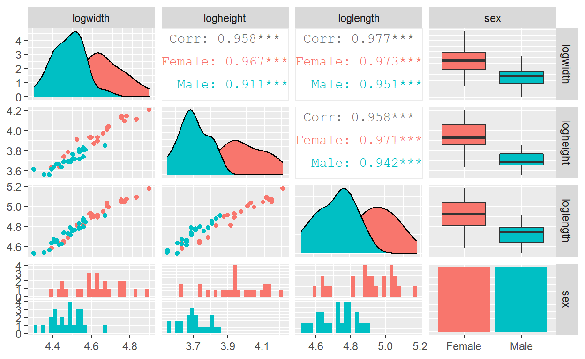

An application of the Hotelling T2 test where the measurements of the carapaces of painted turtles are compared across sex. Shows a visualization of the utility that accounting for several variables under one technique can have.
This problem is taken from Johnson 1992. Measurements on the carapaces from a study of painted turtles are given. The aim is to determine whether or not there are differences across the sex.
| Summary Statistics | ||
|---|---|---|
| across Sex | ||
| Characteristic | Female, N = 24 | Male, N = 24 |
| Length | ||
| Mean (SD) | 136 (21) | 113 (12) |
| Median (25%,75%) | 137 (123,154) | 115 (104,120) |
| Range | 98, 177 | 93, 135 |
| Width | ||
| Mean (SD) | 103 (13) | 88 (7) |
| Median (25%,75%) | 102 (94,110) | 89 (83,93) |
| Range | 81, 132 | 74, 106 |
| Height | ||
| Mean (SD) | 52 (8) | 41 (3) |
| Median (25%,75%) | 51 (48,58) | 40 (39,43) |
| Range | 38, 67 | 35, 47 |
Most of the analysis will be done on the Logarithm scale.
The first three graphs will look at the problem from a univariate perspective. The particular graph that was chosen (beanplot) to represent the information allows for comment on the distribution features so this will be done at the same time.
Figure 1: Distributions of Length over Sex
We can see that Females have one major and one minor mode with the presence of a potential outlier that is roughly 5.2. The Males seem to have one mode, with a distribution that is symmetric. The median for the Females as well as most of it’s data points fall above the grand average (dotted line) with the opposite occurring for the Males.
The reason why there seems to be a minor mode should be inspected as perhaps there is a subgroup present within the dataset that should be accounted for. Given the information thus far it would not be surprising to know that the univariate welch t-test reports a difference in the two sexes over the feature of length. Most of the overlap between the two distributions seem to happen with the upper 75% quantile of the males and the lower 25% quantile of the females.
Figure 2: Distributions of Width over Sex
We can see that the densities both have a single mode. There seems to be a similar sort of overlap between the sample points as with the feature length. It is the case that the univariate welch t test reports a difference in width between the two sexes. There is a potential outlier in the male distribution but overall there aren’t any alarming features.
Figure 3: Distributions of Height over Sex
Most of what was already discussed applies to describing the above plot. Both are considered to have single modes. Even though there is somewhat of a distortion in the upper percentiles for the female, there are not enough data points developing that mode to indicate a potential subgroup; this is probability better explained by a higher level of variation in the population. There seems to be two potential outliers in the lower 25% percentiles in the female distribution.
Now we will try to see what value adding another variable can bring to the analysis.
We are concerned about the overlap between the distributions for the univariate plots. In some cases the variation may be enough to cloud any difference that may actually exist. Ideally the addition of another variable, in this case Width to the plot of length gives another dimension to essentially separate the data points and allows us to compute the mean in a more accurate manner. From the above plot this does not seem to be the case; the overlap in the upper and lower percentiles as mentioned before, is now visualized better.
The plot of length against height brings us closer to what we hope to achieve. The addition of the Height feature to length has highlighted the difference in the two sexes as there is now better separation between the colored points in the lower percentiles of the distribution. This is not perfect but it will make any true differences easier to detect.
A similar case to the previous plot is observed where there is some separation when Height is combined with Width. It would seem that the Height variable adds valuable discriminatory power to the analysis.
Finally we examine the 3D plot of the dependent variables. This requires you to interact with the graph presented. If you were to move the chart such that you were looking down with the length and width features in the x and y plane then you would replicate the first chart where the separation power is not ideal. Now you should rotate the chart such that the height feature comes into focus; as you rotate it then you might notice how the feature lifts some of the green points (females) out of the cloud of blue points (males). Although you can ask for this “lifting effect” to be greater, nevertheless it speaks to the limitations of univariate cases and what can be accomplished by accounting for more variables in the same analysis technique.
The observations are taken from different turtles.
The sample sizes within the Group Sex would be enough to be considered a large sample thus the Central Limit theorem would take effect to assure normality of the sample mean. Also, the previous plots show that there are likely no point that severely disturb the overall trend that is displayed within Sex across the combination of variables.
Judging from the three bivariate plots, we can say that all of the variable combination show a linear trend. One such combination is highlighted to not be particularly helpful, so I question the utility of observing all three of the variables rather than either of the remaining pairs.
| Test statistic | df | P value |
|---|---|---|
| 12.89 | 6 | 0.04482 * |
The test shows that the covariance matrix is not the same across the levels of sex. Although this assumption was eased by the use of the logarithm transformation, the overall problem was not reduced to satisfactory level.
Since we do not have equality of variances, we now consider a similar technique that does not require this assumption. It falls into the same problem category as the Welch’s t test known as the Behrens–Fisher type problems.

The presence of high correlations among the dependent variables are probably not a good thing. This indicates that there may be redundancy in the analysis such that power that is gained by adding another dependent variables may not be justifiable. Thus we might consider removing one of the variables and regaining a degree of freedom that may prove to be more beneficial.
| Test statistic | P value | Alternative hypothesis |
|---|---|---|
| 85.052 | 9.2e-10 * * * | true means are different. |
This analysis uses the technique established in Krishnamoorthy 2004.
The p value attempts to quantify how often we may come across such a dataset given that the null hypothesis is true. If we were to assume that there is no difference between the Sex across the variables of Length, Width and Height then the data that was collected would be considered to be an extremely rare event. Therefore, this should serve as evidence that there is a difference between the Sexes along one or more of the variables considered until some other explanation arises that may state otherwise.
The original question asked for the calculation of both simultaneous and bonferroni intervals. Since we are not assuming equality of variances, I am unsure as to whether simultaneous confidence intervals can be constructed. Thus only the bonferroni intervals are constructed.
| Variable | Estimate | Lower | Upper |
|---|---|---|---|
| Length | -22.67 | -23.66 | -21.67 |
| Width | -14.29 | -14.9 | -13.68 |
| Height | -11.33 | -11.69 | -10.97 |
Johnson, R. A., & Wichern, D. W. (1992). Applied multivariate statistical analysis. Englewood Cliffs, N.J: Prentice Hall
Krishnamoorthy, K., & Yu, J. (2004). Modified Nel and Van der Merwe test for the multivariate Behrens–Fisher problem. Statistics & probability letters, 66(2), 161-169.
NCSS Hotelling’S Twosample T2. [pdf] Available at: https://ncss-wpengine.netdna-ssl.com/wp-content/themes/ncss/pdf/Procedures/NCSS/Hotellings_Two-Sample_T2.pdf